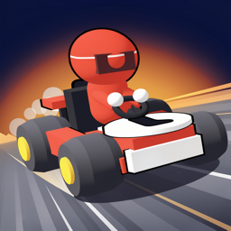
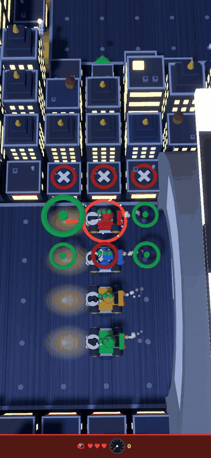
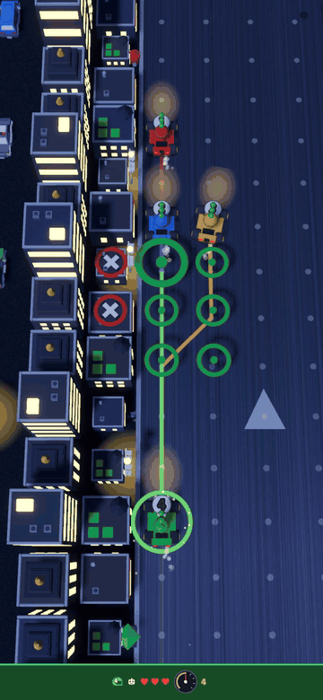

VectorKart — press kit
Turn-based vector racing for iPhone and iPad. Everything on this page may be used freely in coverage of the game.

Fact sheet
| Title | VectorKart |
| Developer | Bertrand Pallier, independent |
| Platforms | iPhone and iPad, iOS 17 or later |
| Release | November 2026 (date to be announced) |
| Price | Free to download. One in-app purchase, Full Game, $0.99, Family Sharing. No ads, no subscriptions. |
| Genre | Turn-based racing, strategy |
| Players | Solo against the AI; pass-and-play for two to four on one device; online duels through Game Center |
| Languages | English |
| Privacy | No data collected. Online features run on Apple's Game Center. |
| Size | About 40 MB |
| App Store | apps.apple.com/app/id6793796587 |
| Contact | Open a request (promo codes, interviews, questions) |
Description
VectorKart is the pencil-and-paper racing game that generations of students played in the back of class, rebuilt as a full 3D kart game. There is no gas pedal: every turn you pick one dot on the grid, your speed carries over, and the corner decides whether you were brave or reckless. No reflexes, no timers, all nerve.
A six-level career takes you from a rookie scramble to a final against full-kit pros, with prize money for brakes, engine, tires and armor. Eight hand-built circuits, three AI skill levels, pass-and-play for four on one device, asynchronous duels with friends through Game Center where a move takes seconds and a race can last a week, and best-lap leaderboards for every circuit.
Free to start: two career levels, three circuits and every online duel. One $0.99 purchase unlocks everything forever.
In one sentence
The graph-paper racing game from school, as a 3D kart game with async duels: one dot per turn, no reflexes, all nerve.
App preview and GIFs


The preview is 886 × 1920 at 30 fps, the App Store's iPhone format. GIFs are 480 px wide; the full-size video is the better source for stills.
iPhone screenshots


iPad screenshots


Key features
- The classic vector racing rules: nine dots per turn, speed carries over, walls cost a heart, four hearts and you are out, no move may end standing still.
- Career: six levels, prize money, four parts that change the move grid (brakes, engine, tires) or add a heart (armor), and a champion's star for the kart.
- Eight circuits with their own personalities: Downtown Loop, Sunset Speedway, Harbor Circuit, Riverside GP, Ridgeline Ring, Neon City, Canyon Rush, Storm Docks.
- Three AI levels. The AI searches how long it can survive at its speed; a weak AI is blind at speed, never random.
- Async online duels through Game Center: invite a friend or get matched, play a move whenever you have a minute.
- Best-lap leaderboards per circuit, race wins and clean races, global or friends only.
- Original low-poly art and sound, a Garage for paint, trim, number and symbol.
- Deterministic integer engine: the same race replays identically on every device, which is how duels stay in sync without a server.
About the developer
VectorKart is made by Bertrand Pallier, who grew up playing the paper game and wanted the version that never existed: 3D karts, real circuits and a way to race friends who live far away. It is an independent production with no publisher.